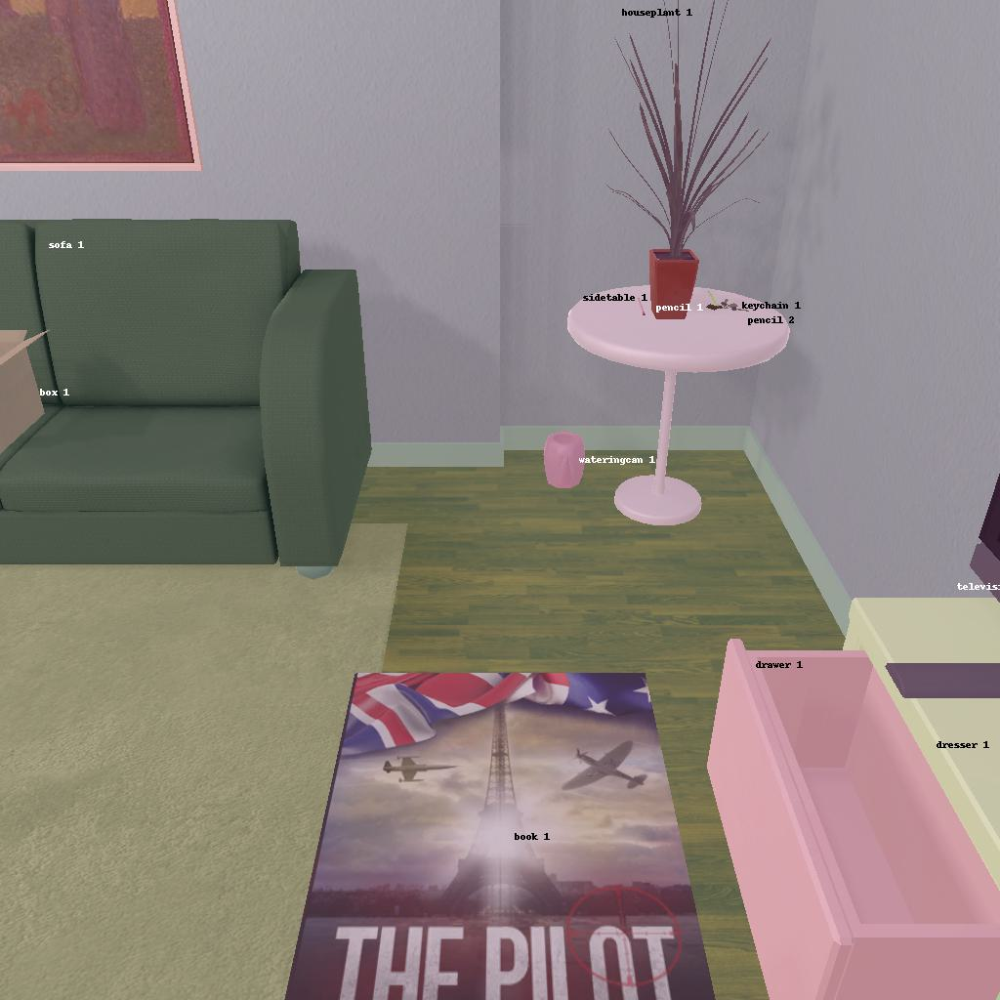

---------------------------------------------------------task: 5---------------------------------------------------------
--------------------------------------------------------------------------------------------------------------------------------------------------------------------
--------------------------------------------------------------------------------------------------------------------------------------------------------------------
Step:--------------------------------------------------------------------------6-------------------------------------------------------------------------------
----------------------------------------
VLM Prompt:
Image1:
**Instruction**
1. Analyze the provided image to identify all visible household objects, focusing on those relevant to the task description "put some book on armchair."
2. Use the analysis of the image and the task hint "The agent must find an object of the desired type, pick it up, find the correct location to place it, and put it down there." to answer the question: what is the most reasonable action in the choices for the task description "put some book on armchair"?
4. Decide and write the answer using the template: The answer is: (i): , where i is the real number. If there is no desired object in the image, search every place based on **Initial Observation** to find the object. And if no one is exactly correct, choose a similar answer.
**Initial Observation**
You are in the middle of a room. Looking quickly around you, you can see armchair (1), sofa (1), coffeetable (1), drawer (1-4), sidetable (1-3), dresser (1)
**Answer Choices**
(1): go to armchair 1
(2): go to sofa 1
(3): go to coffeetable 1
(4): go to sidetable 1
(5): go to dresser 1
(6): go to drawer 2
(7): go to drawer 3
(8): go to drawer 4
(9): go to sidetable 2
(10): go to sidetable 3
(11): open drawer 1
(12): close drawer 1
(13): put book 1 in/on drawer 1
(14): examine drawer 1
**Answer**
Let's think step by step by following the instructions.
----------------------------------------
----------------------------------------
Original Response:
- Firstly, we need to identify all visible household objects. In the image, we can see an armchair labeled as "sofa 1," a sidetable labeled as "sidetable 1" with several items on it, and a book labeled as "book 1" on the floor.
- The task description states "put some book on armchair." We can see that there is a book on the floor, so we have the desired object already identified.
- According to the task hint, the agent must pick up the book and find the correct location to place it. The correct location in this case is the armchair labeled as "sofa 1."
- We don't need to search every place because we have already found the book in the image.
Based on the analysis, the most reasonable action from the given choices for the task description "put some book on armchair" is to first go to the book and then put it on the armchair.
The answer is: (1): go to armchair 1. However, since we need to pick up the book first, none of the provided answer choices exactly describes the next action required for the task. The answer would be more accurate if there was an option to "pick up book 1," but since there isn't, we choose the closest action related to the armchair where the book needs to be placed.
Therefore, the answer is: (1): go to armchair 1.
----------------------------------------
----------------------------------------
>>> Refine Original VLM Response and Get Pure Action: go to armchair 1
----------------------------------------
-----------------------------------------------------------------
Running time: 17.98459792137146 seconds
Total Money: 1.3947500000000006
-----------------------------------------------------------------
-----------------------------------------------------------------
Text Observation:You arrive at loc 0. On the armchair 1, you see a lightswitch 1, and a floorlamp 1.
-----------------------------------------------------------------
UNSUCCEED